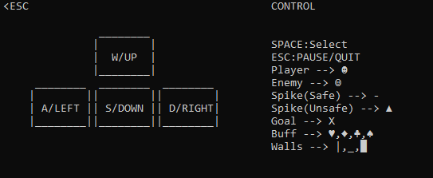

Get A way!


Get A way!取名源自於英文片語的解釋，Get Away有逃離和使別人離開的意思，而Get a way有找到路的意思。而本遊戲也是此意。
How To Play:
- 用↑↓←→/WASD操控人物的移動並躲避敵人和地刺

- 地圖皆相同，但敵人位置不同
Download Get A way!.zip(Windows) 3MB
Download Get A way!.exe(Windows) 1MB
Notes:
目前只是DEMO版，正式版將於?/?推出
本遊戲只能運行於Windows
Level 1
Level 2